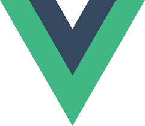
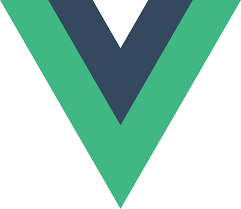

Front-end technologies serve as the foundation and building blocks of a website, defining its user interface and shaping the overall user experience.
Front-end enables you to interact with the web and its actions. In modern web development, an array of tools, frameworks, and practices contribute to creating engaging and responsive websites.
Let's take a look at a list of front-end technologies that are pretty much the backbone of modern web development.


 

Backend technologies are the key to building robust and scalable applications. They power all platforms and products on the web without even being visible to the users. While backend programming languages form the foundation of backend development, they aren't enough on their own.


The MERN stack is a collection of technologies that help developers build robust and scalable web applications using JavaScript. The acronym “MERN” stands for MongoDB, Express, React, and Node. js, with each component playing a role in the development process.
The MERN stack is a collection of technologies that help developers build robust and scalable web applications using JavaScript. The acronym “MERN” stands for MongoDB, Express, React, and Node. js, with each component playing a role in the development process.